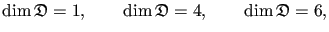
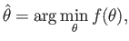
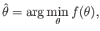
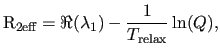
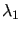
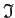

Next: Construction of the Hessian Up: Construction of the values, Previous: The sum of chi-squared Contents Index
|
 |
The construction of the gradient is significantly different for the models
 ,

,
,

,
 , and
, and
 . In Figure 11.1 the construction of the chi-squared gradient
. In Figure 11.1 the construction of the chi-squared gradient
 for the global model
for the global model
 is demonstrated. In this case
is demonstrated. In this case
where is the vector of partial derivatives of the chi-squared equation for the residue i . The length of this vector is
|  | (theparentequation.12) |
with each position of the vector j
equal to

where each  is a parameter of the model.
is a parameter of the model.
The construction of the gradient
 for the model
for the model
 is simply a subset of that of
is simply a subset of that of
 . This is demonstrated in Figure 11.1 by simply taking the component of the gradient
denoted by the symbol
. This is demonstrated in Figure 11.1 by simply taking the component of the gradient
denoted by the symbol
 (the orange blocks) and summing these for all residues. This sum is given by (11.11) and
(the orange blocks) and summing these for all residues. This sum is given by (11.11) and
|  | (theparentequation.13) |
For the parameter set
, which consists of the local  parameter and the model-free parameters of a single residue, the gradient
for the residue i
is simply the combination of the single orange block and single yellow block of the index i
(Figure 11.1).
parameter and the model-free parameters of a single residue, the gradient
for the residue i
is simply the combination of the single orange block and single yellow block of the index i
(Figure 11.1).
The model-free parameter set
 is even simpler. In Figure 11.1 the gradient
is simply the vector denoted by the single yellow block for the residue i
.
is even simpler. In Figure 11.1 the gradient
is simply the vector denoted by the single yellow block for the residue i
.